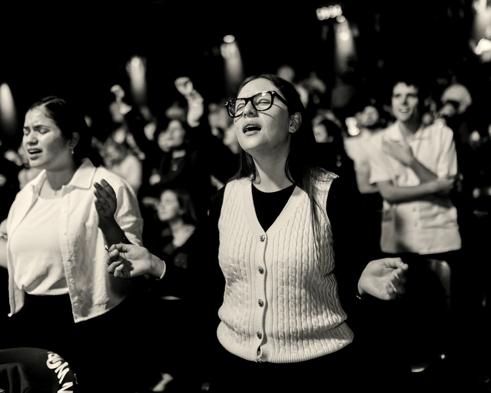
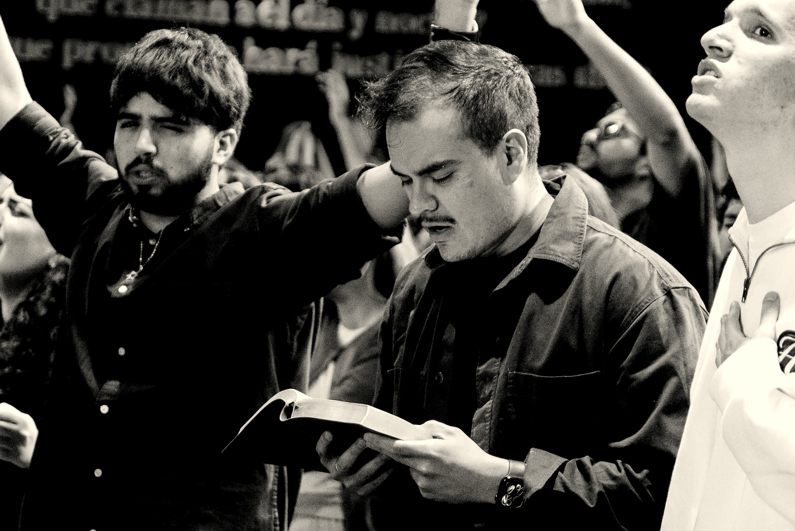

16 y 17 de noviembre
Nos visitan
misioneros
del Instituto MISION

«Id por todo el mundo
y predicad el evangelio a toda criatura».
MARCOS 16:15





Lunes y martes · Perico
Toda lengua
y toda nación
Lun 16 y Mar 17 · 20:30 hs
República de Siria 255 · Entrada libre y gratuita

Reunión especial
Lunes
16 nov
20:30
ForoPrácticas de justicia
21:15
PlenariaHineni · Isaías 6
República de Siria 255 · Entrada libre
Martes 17 · por la mañana
Jornada de
evangelismo
evangelismo
10 A 12 HS
Salimos desde la iglesia a las calles de Perico, junto a los misioneros. ¡Sumate!
Reunión especial
Martes
17 nov
20:30
TalleresMatrimonios
Jóvenes y adolescentes
Cuarto de oración
Jóvenes y adolescentes
Cuarto de oración
21:15
PlenariaEl clamor del Espíritu
República de Siria 255 · Entrada libre
Te esperamos
Noches de misión
Lun 16
20:30 HS
Foro y plenaria
Mar 17
10 A 12 HS
Jornada de evangelismo
Mar 17
20:30 HS
Talleres y plenaria
República de Siria 255 · Perico
Entrada libre y gratuita
 Iglesia
IglesiaEl Renuevo